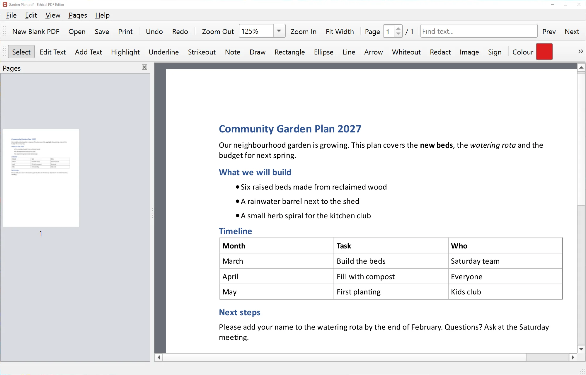

Ethical PDF Editor
The reason this whole thing exists
- Edit the existing text in a PDF – it matches the original font when you have it installed
- Highlight, underline, sticky notes, drawing, shapes and arrows
- Fill in forms and add your signature
- Reorder, rotate, delete and insert pages; merge and split PDFs
- Whiteout, or true redaction that really removes hidden text
- Export pages as pictures, Word or text
.pdfpassword-protected PDFs
